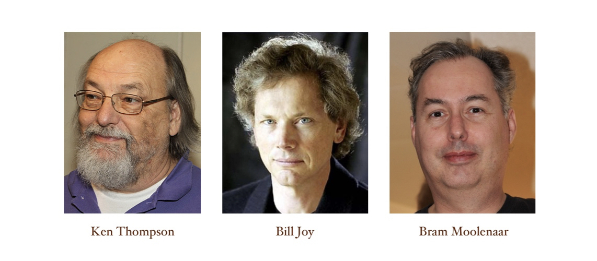
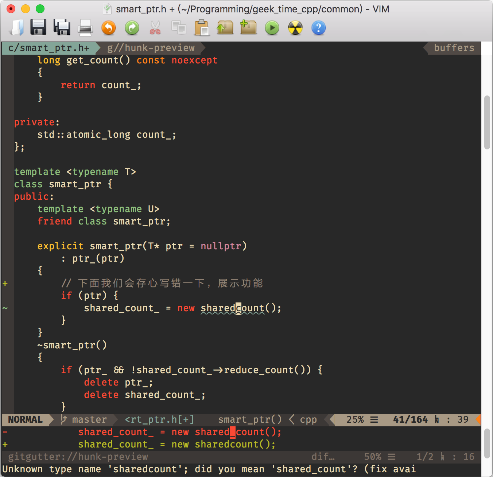

- 00 导读 池建强：Vim 就是四个字“唯快不破”.md
- 00 开篇词 我们为什么要学 Vim？.md
- 01 各平台下的 Vim 安装方法：上路前准备好你的宝马.md
- 02 基本概念和基础命令：应对简单的编辑任务.md
- 03 更多常用命令：应对稍复杂的编辑任务.md
- 04 初步定制：让你的 Vim 更顺手.md
- 05 多文件打开与缓冲区：复制粘贴的正确姿势.md
- 06 窗口和标签页：修改、对比多个文件的正确姿势.md
- 07 正则表达式：实现文件内容的搜索和替换.md
- 08 基本编程支持：规避、解决编程时的常见问题.md
- 09 七大常用技巧：让编辑效率再上一个台阶.md
- 10 代码重构实验：在实战中提高编辑熟练度.md
- 11 文本的细节：关于字符、编码、行你所需要知道的一切.md
- 12 语法加亮和配色方案：颜即正义.md
- 13 YouCompleteMe：Vim 里的自动完成.md
- 14 Vim 脚本简介：开始你的深度定制.md
- 15 插件荟萃：不可或缺的插件.md
- 16 终端和 GDB 支持：不离开 Vim 完成开发任务.md
- 拓展1 纯文本编辑：使用 Vim 书写中英文文档.md
- 拓展2 C 程序员的 Vim 工作环境：C 代码的搜索、提示和自动完成.md
- 拓展3 Python 程序员的 Vim 工作环境：完整的 Python 开发环境.md
- 拓展4 插件样例分析：自己动手改进插件.md
- 拓展5 其他插件和技巧：吴咏炜的箱底私藏.md
- 结束语 Vim 森林探秘，一切才刚刚开始.md
00 开篇词 我们为什么要学 Vim？
你好，我是吴咏炜。
今年 2 月，我在极客时间的第一门课程《现代 C++ 实战 30 讲》结课了。现在，我给你带来了一个全新的课程，《Vim 实用技巧必知必会》。
这两门课虽然主题不同，但我准备它们的初衷却是完全一样的。我在 C++ 课程里分享过，我特别喜欢 Larry Wall（拉里 · 沃尔）所说的程序员的三大美德：懒惰，急切，傲慢（laziness, impatience, hubris）。正是这些美德，驱动我们不断地追求效率和极致，而 Vim 就恰恰是这样一个效率利器。我想通过接下来的课程，和你一起享受 Vim 带来的技术乐趣。
Vim 的“前世今生”
说到 Vim，就不能不谈一下 vi；要说 vi，那跟 Unix 就有着千丝万缕的联系。万物起源总有那么点故事，我们这个课程的主题也不例外。这个故事可以讲上很长时间，不过，今天不是故事会时间，我只会花几分钟给你快速梳理一下这段历史，带你了解 Vim 的“前世”，也就能更好地理解它的“今生”。
故事的开头是在 1975 年秋天，Unix 诞生之后的第六年。Ken Thompson（肯 · 汤普逊）来到了加利福尼亚大学伯克利分校，开始了为期一年的访问教授生活。当然，他也带上了最新版本的 Unix 的补丁。根据传说，由于贝尔实验室律师们的阻挠，他不能直接把补丁给其他人，而只能把装有补丁的磁带“丢”在某个地方，然后由别人“正好”捡到……Unix 就以这种“地下”的传播方式流传开了。
同年，年轻的 Bill Joy（比尔 · 乔伊）也进入了加利福尼亚大学伯克利分校，学习电子工程和计算机科学。他立刻就迷上了 Unix。在后面几年的硕士生涯里，他修正了 Unix 里的 Pascal 系统，使得 Pascal 成了学生编程的缺省选择。他在 1978 年负责发布了第一个伯克利发行版（BSD，即 Berkeley Software Distribution），其中包含了他写的 ex，一个编辑器 ed 的改进版本。随即，在 1979 年他发布了第二版的伯克利 Unix（2BSD），包含了他写的 vi 和 csh。他独立实现了 BSD 中的 TCP/IP 栈。
离开伯克利后，他成了 Sun 的联合创始人和首席科学家，在 Solaris 操作系统、NFS 网络文件系统、SPARC 处理器、Java 语言的开发等多个领域中作出了自己的贡献……
在 Bill Joy 的无数传奇故事里，有一个是，他只花了一个周末就写出了 vi。这当然……不是真的。vi 是演进的结果，前面还有 ed、em、en、ex（哈，对于两字母的 Unix 命令，我看得也是有点晕了🤔）等等一系列。只不过，那些都是基于命令的行编辑器，而不是全屏编辑器（部分原因是那时的很多系统仍然使用着电传打字机，而不是 CRT 终端）。vi 可以充分使用整个终端屏幕的资源，易用性的提升是毋庸置疑的。
不管怎么说，vi 只是一个 Bill 无意插柳柳成荫的结果，是他职业生涯中的一个副产品而已。在 1982 年初，Bill Joy 加入 Sun 公司之后，vi 就不怎么有人维护了。此外，由于没有得到 AT&T 授权的公司和个人也不能使用 vi 的源码（律师又一次发挥了威力），因此，大量的 vi 克隆版本纷纷出现。
目前大部分 Linux 发行版和 macOS 中的 vi 命令唤起的都是 Vim，一个由 Bram Moolenaar（布莱姆 · 穆勒纳尔）持续开发维护了三十多年的 vi 克隆（想想，三十年在计算机的发展中，那是经历了多少代技术的演进！）。在这些年里，其他的 vi 克隆诞生又死去，最后只剩下了 Vim（好吧，“只”是夸张手法）。起初，Vim 的意思是 Vi IMitation，但很快就成了 Vi IMproved。而这，就是我们这个课程的主题。

Vim 的优势
vi 有着一个非常老古董的设计，就是它是一个有“模式”的编辑器。其他大部分编辑器都相当于 vi 的插入模式，输入什么字符就会在屏幕上出现什么字符。但 vi 的行为不是如此。
事实上，这种不那么直观的设计，即使在 vi 初次出现的 20 世纪 70 年代，也被认为是违反人机交互的原则的。所有的后续 vi 实现，包括 Vim，都继承了 vi 的模式设计。
令人惊讶的恐怕是，尽管有这些问题，Vim 在程序员群体中的流行程度并没有受到影响。根据 Stack Overflow 的开发者调查：2015 年程序员中最流行的编辑器是 Notepad++，Vim 的使用比例是 15.2%；2019 年最流行的开发环境变成了 Visual Studio Code，而 Vim 的使用比例还保持在了 25.4%。
这就是这门课程从头到尾都会试图回答的问题：Vim 到底好在哪里？
拿我自己来说，我刚开始使用 Vim 时，不是出于选择，而是在 Linux 上开发的需要。不过，用着用着我就喜欢上 Vim 了——不仅在 Linux 下用，也在 Windows 下用（从十几年前开始，我就一直自己编译和维护着一个 Windows 下的最新 Vim 可执行文件）。自打切换到了 Mac 上之后，当然就更不用说，MacVim 是日常打开次数最多的工具。这里面最最主要的原因，就是使用 Vim 编辑文件非常高效。
在很大程度上，vi 的“高效”是一种历史性的设计要求，当年程序员需要在网速 300 波特（大致认为是今天网速的百万分之一吧）的环境里编辑文本文件。那个时代，人们还不可能拥有自己的计算机，大学、政府、公司里的计算机全都通过终端来进行分时共用。因此，vi 在命令上不得不非常“经济”。好玩的是，这种经济性，在今天仍然非常有用，它是 vi 及其克隆软件的高效之源。
我已经强调了几遍了，编辑的高效性，就是 Vim 最大的一个特点。除此之外，Vim 的优势还有很多，我来给你分享一下我认为最重要的三点。
第一，与 vi 最初只运行在 Unix 平台上不同，Vim 是一个完全跨平台的编辑器。
它支持的第一个操作系统是 AmigaOS，然后被逐步移植到了大部分其他操作系统上，既有我们常见的 Unix/Linux、Windows、macOS，也有不常见或者过时的操作系统，如 OS/2、BeOS、OpenVMS，甚至在 iOS 和 Android 上也能找到 Vim 的移植版本。这可以算是 Vim 的一个重要优点了。这个课程里，我会介绍 Vim 在主流操作系统上的使用，包括 Linux、macOS 和 Windows。
第二，Vim 也是一个高度可定制、可扩展的编辑器。
这对热爱折腾的程序员来说，绝对是一种乐趣，同时也是进一步提升效率的源泉。定制 Vim ，大部分情况下，你不需要什么特殊工具，使用 Vim 本身就可以。Vim 有自己的脚本语言，就叫 Vim 脚本（Vim script），语法相当简单，任何一个程序员应该都可以轻松地学会。配置文件和功能扩展都使用 Vim 脚本，使用统一的语法。同时，需要更强大的扩展能力还可以使用 Python、Perl、Ruby、Tcl 等其他通用的脚本语言，或者直接调用外部命令。你可以很容易打造一个你自己专属的开发环境，也很容易把这个环境从一台机器转移到另外一台机器上。
第三，作为一个发展了几十年的老牌开源软件，Vim 也有着良好的生态环境。
网上可以找到大量的现成脚本和插件，能帮助你打造一个顺手的开发环境。总的来说，像语法检查、自动补全等程序员常用功能，全都可以在 Vim 里实现。你不需要离开 Vim，就可以完成从写代码、编译到运行的大部分工作。下面的这张图里，就展示了 Vim 的很多扩展一起工作的结果：

你可以看到，左边栏展示了 Vim 相对当前 Git 版本的修改状态（一处增，一处改），波浪线标出了代码中目前有错误的部分，底部显示了错误的原因，下面有个小窗口显示了光标所在处相对 Git 版本的变化，状态栏里更是密密麻麻地显示了编辑器模式、Git 分支、文件名、修改状态等信息。这里面用到了好几个扩展，包括颜色主题也是一个扩展。
虽然 Vim 最初是个针对字符界面的应用程序，但它也能支持主流的图形界面，包括 Windows 的图形界面，Linux 下的 GTK，以及 macOS 下的 Cocoa 和 Carbon，等等。作为一个并非“原教旨主义”的 Vim 用户，我个人是绝对赞成图形界面的使用的。因而我会推荐，只要有条件，就使用有图形界面的 Vim 版本。
不过，这个课程的绝大部分内容是对图形界面和文本界面都有效的（在两者有区别的地方，我则会明确指出）。换句话说，在你只能使用基于字符界面进行远程连接时，Vim 的功能仍然大部分有效，只是界面的美观程度会受一定的影响而已。也由于这个原因，Vim 在后端开发人员中特别受欢迎。
Vim 的模式是 Vim 的高效所在，但同时也是 Vim 学习上的一个难点。略有点搞笑的是，Stack Overflow 上有一个目前票数达到 3840 的问题是“如何退出 Vim 编辑器”，按问题票数排名可以进入前 100，这可能就是 Vim 的模式造成的困惑了。
反过来，这个反常规的设计使得 Vim 可以使用很逻辑的多个按键来处理文本，比如，在正常模式使用 daw 三个按键代表 delete a word 来删除光标下的一个完整单词，也可以输入 : 进入命令模式使用“make”这样的完整命令来进行项目的构建。
整体来说，Vim 会给你一个高效、跨平台、高定制性、易于扩展的开发环境。全面掌握 Vim 需要花费一定的时间进行学习。但这个时间不会白费，因为 Vim 可以在任何地方使用，它会成为你编程道路上一件称手的兵刃，让你成为更加高效的开发者。
课程主要内容
比起很多“开箱即用”的编辑器，Vim 是有一定的学习曲线的。虽然学 Vim 比学编程容易多了，但对于非英语母语的人来说，Vim 又会难上一点点。我会尽量多讲原理，而不是枯燥地讲解命令。不得不讲命令的时候，我会使用图片和动画，让你能对相关内容有一个直观的理解。对于很多 Vim 的命令，我们是需要形成“肌肉记忆”的；我们不需要死记硬背，但需要多看、多练，熟能生巧，在学习过程中自然而然就掌握了使用 Vim 的技巧。
作为一个有历史的编辑器，Vim 一直保持着非常良好的向后兼容性。学 Vim 学到的东西不会过时，在你的程序员生涯中一直可以用下去。我个人的 Vim 配置文件始于约 20 年前，慢慢地添砖加瓦，一直用到了今天。同时，Vim 也一直在发展，虽然不快，却也从来没有停下来（从发布 8.0 版本算起，平均每天 3.7 个补丁吧）。
在这个课程中，我会基于目前最新的 Vim 8.2 来讲解 Vim 的功能。你将会学到：
- Vim 的安装
- Vim 的模式和命令
- Vim 的配置
- Vim 的使用技巧
- Vim 里的重要插件
及最最重要的
- 如何把 Vim 集成到你的工作流里，让它成为一件称手的工具，来进行高效的编辑
课程学习要求
我对这门课程的定位是零基础课，哪怕你以前没有用过 Vim ，也完全可以上手。这个课程不是 Vim 的百科全书，不会把 Vim 的所有命令选项，不管有用没用，全部都教给你。这是一个“新”教程，里面讲述的版本、很多技巧和插件是最近几年才有的，甚至是我在写专栏的时候才发现的。这也是一个面向实践者的教程，会让一个需要或想要使用 Vim 的开发者，从入门到精通，学会高效地使用 Vim 完成程序或其他文本文件的编辑。
虽然课程定位是零基础，但这并不意味着我对你没有任何要求。我仍然要求你在学习课程前：
- 熟悉你使用的平台上的包管理器（yum、apt、brew 等；仅类 Unix 环境），知道如何完成程序的安装和卸载；
- 安装了 Git，并对 Git 操作有基本的概念（不要求熟练掌握，因为我会给出大部分情况下需要的命令）；
- 有一颗勇于探索的心，愿意花点力气把手里的“武器”打造得更为好用、称心。
使用 Vim 有不同的场景。在我设想的环境里，你是一个程序员，但我不对语言作出要求。课程的大部分内容完全是语言无关的，无论你使用什么编程语言开发，都应该可以获得有用的知识。
不过，如果你使用 C、C++ 或 Python 进行开发，你可以得到一些额外的福利，因为这些是我主要使用的语言。这三个语言的额外重要性在于，Vim 的插件有可能会用到这三种语言。
如果你使用其他语言的话，就多多留言，在留言区介绍你自己使用 Vim 的情况，有啥问题和困惑一定要及时提出来，这样，我也可以更有针对性地解决你的问题；如果说得太晚了，我可能就帮不上忙了哦😁。
好了，闲话就说到这里。下一次，我们就进入正题，从 Vim 的基本安装和配置开始讲起。
我是吴咏炜，我们下一讲见。
© 2019 - 2023 Liangliang Lee. Powered by Vert.x and hexo-theme-book.